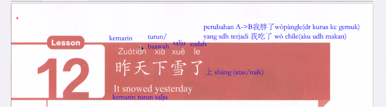
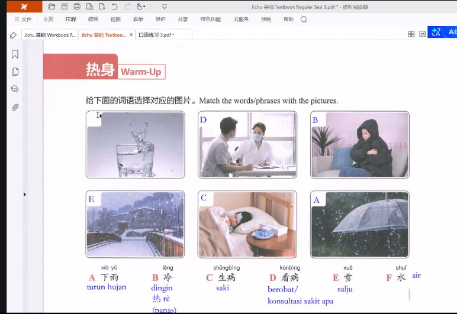

Latihan percakapan · 对话练习

Arti: "Kemarin turun salju / It snowed yesterday."
Kosakata 昨天 (zuótiān) berarti kemarin, kata 下 (xià) berarti turun / bawah (kebalikan dari 上 shàng = atas/naik), kata 雪 (xuě) adalah salju, dan 了 (le) adalah partikel penanda perubahan kondisi atau peristiwa yang telah terjadi.

Jawaban yang tepat: A. 下雨 (xià yǔ = turun hujan)
Penjelasan: Menampilkan butiran air hujan yang turun membasahi payung transparan.
Jawaban yang tepat: B. 冷 (lěng = dingin)
Penjelasan: Seseorang mengenakan jaket tebal dan bersedekap menahan hawa dingin.
Jawaban yang tepat: C. 生病 (shēng bìng = sakit)
Penjelasan: Pasien yang sedang berbaring lemas dengan kantung es/kompres penurun demam di sampingnya.
Jawaban yang tepat: D. 看病 (kàn bìng = berobat / berkonsultasi ke dokter)
Penjelasan: Pasien yang duduk di ruang praktik sedang berkonsultasi mengenai keluhan kesehatannya kepada dokter berpakaian medis putih.
Jawaban yang tepat: E. 雪 (xuě = salju)
Penjelasan: Lanskap jembatan kayu dan rumah yang terselimuti butiran salju putih tebal (昨天下雪了).
Jawaban yang tepat: F. 水 (shuǐ = air)
Penjelasan: Segelas air minum bersih dengan percikan segar yang disarankan banyak diminum saat cuaca dingin atau kurang sehat (多喝水).